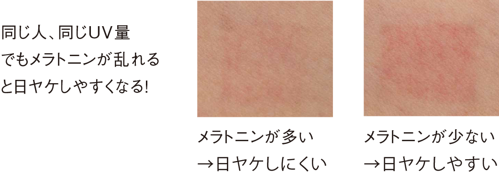

シミとは？
肌のシミ・ソバカスは、表皮の一部に沈着したメラニンが、肌表面から透けて見えている状態です。
本来、メラニンは「紫外線から皮フの細胞を守る」という働きがあるため、紫外線を浴びると過剰にメラニンを作り出して、皮フへの害を食い止めようとします。このように過剰にメラニンがつくられてしまうことで、「シミ」となって肌表面に現れます。
シミケアをするには？
まずは紫外線のカットから！
スキンケア・メーク・ライフスタイル3つの観点からポーラがアドバイスを提案します。
-
スキンケアのアドバイス
-
メークのアドバイス
-
ライフスタイルのアドバイス
-
もっと分かる！シミのこと①
シミのできやすい「ライフスタイル」とは？ -
もっと分かる！シミのこと②
夏はやっぱりヤケやすいので要注意。 -
スキンケアのアドバイス
スキンケアのアドバイス

曇りの日も、家の中でも、紫外線リスクは実はゼロではありません!油断せずに、常に紫外線ケアを実施しましょう。
美白ケアの3ヶ条
紫外線はもちろん、花粉や大気汚染物質などの外部刺激もシミの要因に。ファンデーションや日ヤケ止めでUVカットをするだけでなく、丁寧な洗顔も心がけましょう。
シミがどうやってできるの？
シミができるメカニズム
シミは紫外線などの影響でメラニンが過剰に発生し、その色が濃くなることで生まれます。物理的な刺激はシミに悪影響なので要注意です。
メークのアドバイス
ファンデーションだけではなくコンシーラーを使うとキレイにカバーできます。
ファンデーションの色は明るすぎると気になるところがかえってが目立つので、肌とシミの中間の色を選ぶとナチュラルに仕上がります。
大きく濃いシミを隠すのには？
カバー力の高い硬めのコンシーラーをシミに直接塗った後、コンシーラーの縁の部分をたたいて肌になじませます。仕上げにフェイスパウダーをのせて。
広い範囲のシミを隠すには？
コンシーラーで放射状の線を描き、指腹でたたいてなじませます。指をすべらせるとファンデーションがとれるので、たたいてなじませるのがコツ。
ピンク色のチークを単色で使うと頬のシミを目立たせてしまいます。まずオレンジ色のチークをつけ、その上からピンク色のチークをのせるとシミを目立たせずに血色感がプラスされ、明るく華やかな印象に仕上がります。
ライフスタイルのアドバイス
体内で発生する活性酸素NOラジカルは、過剰なメラニン生成の原因になります。また、加工食品やファーストフードも、透明感を妨げる要因。サプリなども活用しながら、内側からのケアも積極的に行いましょう。
スマホやパソコンを夜まで長時間見続けている生活では、体内時計の正常化に関わるホルモンであるメラトニンが減少します。このメラトニンの減少が、日ヤケしやすい肌状態を引き起こすことが、ポーラ研究所の調べでわかりました。そのため、同じ人が同じ量の紫外線に当たった場合でも、メラトニンの量により、日ヤケやシミの出来やすさに影響があったのです。
もっと分かる！シミのこと②
UV-AとUV-B,近赤外線の
違いを知っていますか？
地上に届く太陽光には、波長の異なる紫外線(UV-AとUV-B)と、近赤外線があり、それぞれに異なる特徴があります。

紫外線UV-Aは、真皮のコラーゲンにダメージを与え、シワ・たるみの原因になるのに対し、紫外線UV-Bは、肌の表面、表皮へダメージを与え、日ヤケ、シミ、ソバカスの原因となります 。
そして、この２つより高い割合で真皮の深くに到達し、コラーゲンを分解、シワ･たるみを促進する可能性があるのが近赤外線です。
紫外線UV-Aは、真皮のコラーゲン分解が早く進むのに対し、近赤外線はUV-Aよりもジワジワと進むため、紫外線と異なる速度で肌の老化を促進します。また、知らない間にうっかり日ヤケをしてしまう要因にもなっています。
ジワジワと肌にダメージを与える
UV-Aは室内でも注意が必要です。
紫外線はUV-Aは、ガラス窓をなんと「85%」も透過してしまうこ
とがわかっています。
知らない間にうっかり日ヤケをしてしまう要因になりますので注意が必要です!
UV-Aが降り注ぐピークは5月から。
梅雨時も気をつけましょう。
紫外線量は3月頃から上がり始め、UV-Aは5月にピークを迎え8月頃まで高い値が続きます。梅雨の時期の快晴日は紫外線量が多いので注意が必要です!
もっと分かる！シミのこと③
夏はやっぱりヤケやすいので要注意。
ポーラ研究所の調べで、同じ紫外線量でも、夏はヤケやすいことがわかっています。
化粧品の研究は日進月歩。毎夏、新しい情報が活発に発信されています。夏が来る前には最新情報や新製品のチェックで美肌を目指しましょう。
紫外線量が同じでも、実は夏はヤケやすい！
同じ人・同じ紫外線量でも、夏は他の季節に比べて紫外線に反応しやすい肌状態です。
日傘や帽子では防げない
地面から跳ね返った紫外線にも注意を。
夏のプールや海水浴はもちろん、特にウインタースポーツは対策必須。日頃、お子さんとの公園遊びや砂場あそびもうっかり日ヤケをしがちなので気をつけましょう。